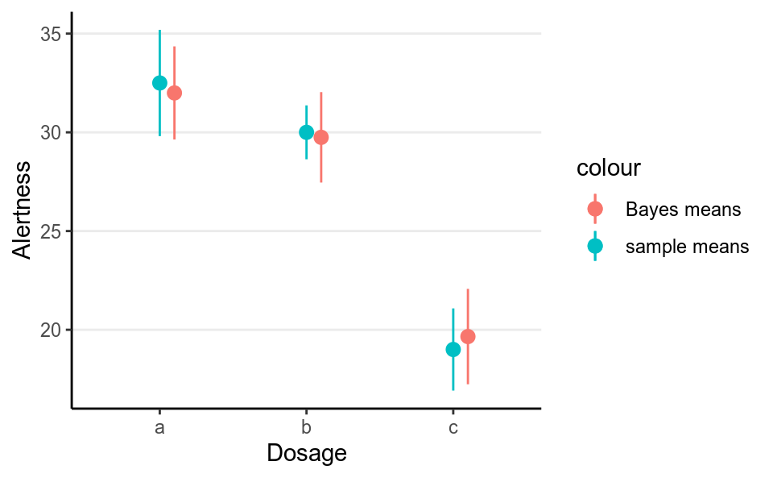
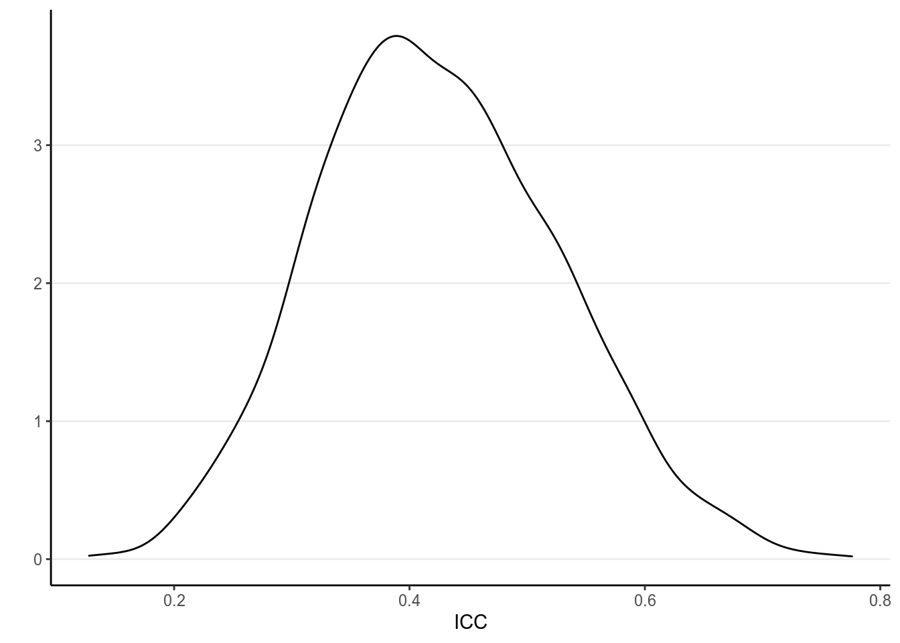
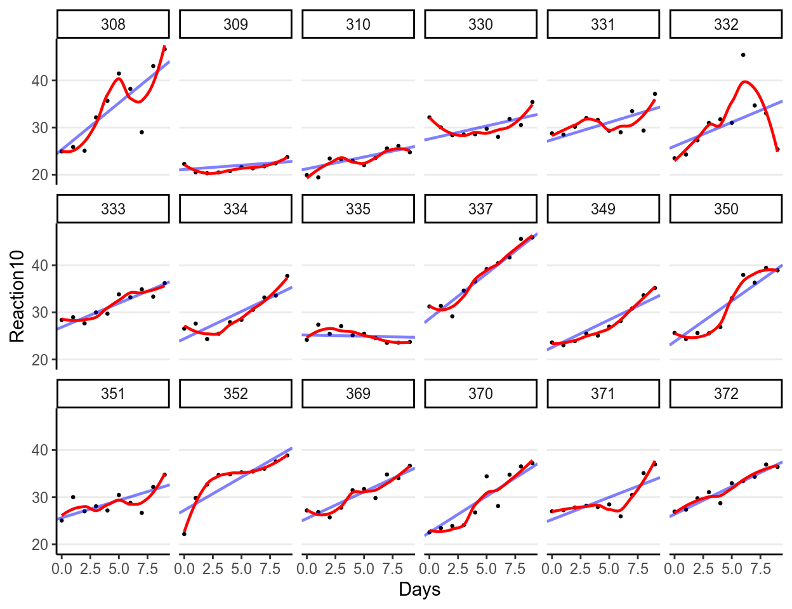
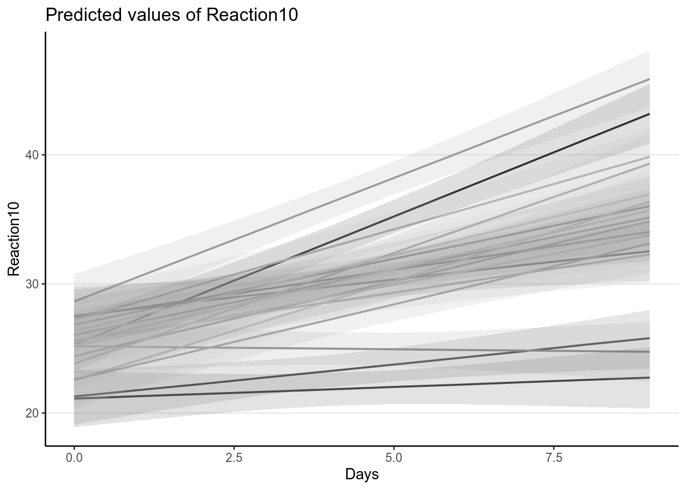

Chapter 10 Hierarchical & Multilevel Models
In this note we’ll talk about hierarchical models, starting with the Bayesian analogue of ANOVA. While the results of Bayesian regression are usually similar to the frequentist counterparts, at least with weak priors, Bayesian ANOVA is usually represented as a hierarchical model, which corresponds to random-effect ANOVA in frequentist. We’ll then build on that to discuss multilevel regression models with varying intercepts and slopes.
10.1 ANOVA
We’ll use some demonstration data that usually corresponds to a typical psychological experiment that uses one-way ANOVA:
# From http://personality-project.org/R/datasets/R.appendix1.data
alert <- tibble(Dosage = factor(rep(c("a", "b", "c"), each = 6)),
Alertness = c(30, 38, 35, 41, 27, 24, 32, 26, 31,
29, 27, 35, 21, 25, 17, 21, 20, 10))
# Show barplot
ggplot(alert, aes(x = Dosage, y = Alertness)) +
# Mean + SE
stat_summary()># No summary function supplied, defaulting to `mean_se()
As can be seen, Dosage c has lower mean than others.
10.1.1 “Frequentist” ANOVA
In frequentist analyses, we generally first perform an omnibus test:
># Df Sum Sq Mean Sq F value Pr(>F)
># Dosage 2 619 309.5 11.5 0.00094 ***
># Residuals 15 404 26.9
># ---
># Signif. codes: 0 '***' 0.001 '**' 0.01 '*' 0.05 '.' 0.1 ' ' 1And then there will be post hoc comparisons with adjustment on \(p\) values
>#
># Pairwise comparisons using t tests with pooled SD
>#
># data: alert$Alertness and alert$Dosage
>#
># a b
># b 0.417 -
># c 0.001 0.005
>#
># P value adjustment method: holmwhich shows that c was lower than both a and b.
10.1.2 Bayesian ANOVA
In Bayesian, it is more common to treat grouping variables, especially with
more than three or four categories, as clusters in hierarchical modeling.
Specifically, we start with the normal model:
\[\texttt{Alertness}_{ij} \sim \mathcal{N}(\mu_j, \sigma)\]
but in the priors, we assume that the \(\mu_j\)s are exchangeable and have a
common prior distribution such that
\[\mu_j \sim \mathcal{N}(\gamma, \tau)\]
This means that we believe the group means themselves are from a normal
distribution with mean \(\gamma\) and SD \(\tau\). \(\gamma\) is the grand mean of
Alertness averaged across the conditions, and \(\tau\) is the between-condition
SD. They are called hyperparameters, and they also need priors (i.e.,
hyperpriors). Because the prior for \(\mu_j\) consists of hyperparameters that
themselves have prior (hyperprior) distributions, this is also called
hierarchical priors. We’ll use:
\[\begin{align*}
\gamma & \sim \mathcal{N}(0, 50) \\
\tau & \sim \textrm{Gamma}(2, 1 / 8)
\end{align*}\]
Note that the Gamma prior was recommended in previous papers for hierarchical
models, with the 8 in 1/8 being the prior belief of what the maximum value of
\(\tau\) can be.
m1 <- brm(Alertness ~ 1 + (1 | Dosage), data = alert,
prior = c(# for gamma
prior(normal(0, 50), class = "Intercept"),
# for sigma
prior(student_t(4, 0, 10), class = "sigma"),
# for tau
prior(gamma(2, 0.125), class = "sd", coef = "Intercept",
group = "Dosage")
),
# Hierarchical models generally require smaller stepsize
control = list(adapt_delta = .99))| term | estimate | std.error | lower | upper |
|---|---|---|---|---|
| b_Intercept | 26.45 | 7.04 | 14.69 | 37.28 |
| sd_Dosage__Intercept | 10.97 | 6.05 | 4.29 | 22.68 |
| sigma | 5.58 | 1.15 | 4.04 | 7.70 |
| r_Dosage[a,Intercept] | 5.62 | 7.24 | -5.21 | 17.93 |
| r_Dosage[b,Intercept] | 3.28 | 7.14 | -7.77 | 15.14 |
| r_Dosage[c,Intercept] | -6.77 | 7.20 | -18.15 | 4.91 |
| lp__ | -66.93 | 1.98 | -70.63 | -64.35 |
From the results, the posterior mean for \(\gamma\) is
26.455 (SD =
7.045), which was the grand mean Alertness
level. The between-group SD was estimated to be \(\tau\) =
10.973, whereas the within-group
SD was estimated to be \(\sigma\) =
5.575.
You can get the posterior mean for the mean of each group (i.e., \(\mu_j\)) using
># Estimate Est.Error Q2.5 Q97.5
># a 32.1 2.31 27.4 36.7
># b 29.7 2.27 25.4 34.2
># c 19.7 2.32 15.3 24.410.1.2.1 Shrinkage
Note that in the above model, the Bayes estimates of the group means are different from the sample group means, as shown in the following graph:
ggplot(alert, aes(x = Dosage, y = Alertness)) +
# Mean + SE
stat_summary(aes(col = "sample means")) +
geom_pointrange(data = as_tibble(coef(m1)$Dosage[ , , "Intercept"],
rownames = "Dosage"),
aes(x = Dosage, y = Estimate,
ymin = Estimate - Est.Error,
ymax = Estimate + Est.Error,
col = "Bayes means"),
position = position_nudge(x = 0.1))># No summary function supplied, defaulting to `mean_se()
If you look more carefully, you can see that the Bayes estimates are closer to the middle. This shrinkage effect may seem odd at first, but it has a good reason. The hierarchical assumes that there are something in common for observations in different groups, so it performs partial pooling by borrowing information from other groups.
To illustrate the strength of partial pooling, I went through a thought experiment with my students in my multilevel modeling class. Imagine it’s your first time visiting Macau, my hometown, and you are about to go to a McDonald’s there. You’ve never been to any restaurants in Macau. So what do you expect? You probably will use your experience of eating at McDonald’s in the US as a reference. The Bayesian hierarchical model here is the same: it assumes that even though participants received different Dosage, there are something similar among them, so information from one group should provide some information for another group. And for many of our problems in research, hierarchical models have been shown to make better predictions and inferences, compared to traditional ANOVA. See Kruschke and Liddell (2018) for some more discussion.
10.1.2.2 Notes on multiple comparisons
With hierarchical models, the common recommendation is that no further control for multiple comparison is needed (see Gelman, Hill, and Yajima 2012). For one, we don’t use \(p\) values in Bayesian. For the other, by shrinking the group means closer to the grand mean in a hierarchical model, the comparisons in some sense have already been adjusted. You can plot the estimated group means by:

And below it shows the posterior of the differences:
ranef_draws <- coef(m1, summary = FALSE)$Dosage[ , , "Intercept"]
# Find all comparisons:
m1_cont <- combn(colnames(ranef_draws), 2, simplify = FALSE)
# Compute mean differences
m1_cont_draws <- map_dfc(m1_cont,
~ tibble(ranef_draws[, .x[1]] -
ranef_draws[, .x[2]]) %>%
`names<-`(paste(.x[1], .x[2], sep = "-")))
# Plot the contrasts
mcmc_areas(m1_cont_draws, prob = .95, bw = "SJ")And the results in this example are similar to the post hoc comparisons.
10.2 Multilevel Modeling (MLM)
Multilevel modeling is the set of techniques that built on the previous hierarchical model. It is proposed kind of separately in multiple disciplines, including education and other social sciences, and so historically it has been referred to by many different names, such as:
- Mixed/Mixed-effect models
- Hierarchical linear models
- Variance component models
It allows us to build models on different groups/clusters, and allows the parameters to be different across clusters. However, it does partial pooling by borrowing information from one cluster to another, which is especially beneficial when some groups have only a few people, where borrowing information from other clusters would help stabilize the parameter estimates.
10.2.1 Examples of clustering
There are many different forms of clustering in data across different disciplines. We’ve seen the example of people clustered in experimental conditions. Other examples include:
- Students in schools
- Clients nested within therapists within clinics
- Employees nested within organizations
- Citizens nested within employees
- Repeated measures nested within persons
They can be represented in network graphs like the following (students within schools):

Sometimes there are more than one level of clustering, like students clustered by both middle schools and high schools. This is called a crossed structure as shown in the following, where we say that students are cross-classified by both middle and high schools. Another example commonly happened in psychological experiments is when participants see multiple stimuli, each as an item, so the observations are cross-classified by both persons and items.

The repeated measures nested within persons one is particularly relevant as that means essentially all longitudinal data are multilevel data and should be modelled accordingly. It allows one to build individualized model to look at within-person changes, as well as between-person differences of those changes. Techniques such as dependent-sample \(t\)-test, repeated-measures ANOVA, growth curve modeling, and time-series analyses, can all be represented in the multilevel modeling framework. Therefore, some authors, such as McElreath (2016), would suggest that MLM should be the default model that we use for analyses, rather than regression.
10.2.2 Data
We will use the data set sleepstudy from the lme4 package, which is the
package for frequentist multilevel modeling. The data set contains 18
participants, each with 10 observations. It examines the change in average
reaction time per day with increasing sleep deprivation. See ?lme4::sleepstudy
for more of the description. Here is a plot of the data:
This data set has clustering because it is repeated measures nested within persons. It is more useful to plot the change in the outcome:
ggplot(sleepstudy, aes(x = Days, y = Reaction)) +
geom_point(size = 0.5) +
geom_smooth() +
# presented by person
facet_wrap(~ Subject, ncol = 6)># `geom_smooth()` using method = 'loess' and formula 'y ~ x'
As you can see, most people experience increases in reaction time, although there are certainly differences across individuals.
10.2.3 Intraclass correlation
With multilevel data, the first question to ask is how much variation in the outcome is there at each level. This is quantified by the intraclass correlation, which, for a two-level model, is defined by \[\rho = \frac{\tau^2}{\tau^2 + \sigma^2}\] where \(\tau\) is the between-level SD, which is the SD of the cluster means (i.e., the variability of mean response time across persons in this example), and \(\sigma\) is the within-level SD (i.e., variability within a person, which is assumed constant across persons).
The ICC represents the proportion of variance of the outcome that are due to between-level (e.g., between-group, between-person) differences
Here is a graph from my MLM class showing how the data would be like with different ICC levels:
 As you can see, the higher the ICC, the higher the variations in the
cluster means, relative to the within-cluster variations. Below is the graph
for the
As you can see, the higher the ICC, the higher the variations in the
cluster means, relative to the within-cluster variations. Below is the graph
for the sleepstudy data:
ggplot(sleepstudy, aes(x = Subject, y = Reaction)) +
geom_jitter(width = 0.1, col = "darkgrey") +
stat_summary(geom = "point", fun.y = mean,
size = 4, shape = 24, fill = "red")
Which has substantial between-person variations.
10.2.3.1 Computing ICC
To compute the ICC, we need to first fit a multilevel model, which in this case is the varying intercept model: \[\begin{align*} \texttt{Reaction}_{ij} & \sim \mathcal{N}(\mu_j, \sigma) \\ \mu_j & \sim \mathcal{N}(\gamma, \tau) \end{align*}\] where \(\mu_j\) is the mean reaction for the \(j\)th person, and \(i\) indexes measurement occasions.
We’ll rescale Reaction by 10:
To use weakly informative priors, we will set \[\begin{align*} \gamma & \sim \mathcal{N}(0, 50) \\ \sigma & \sim t^+(4, 0, 5) \\ \tau & \sim \textrm{Gamma}(2, 1 / 5) \end{align*}\]
m2 <- brm(Reaction10 ~ (1 | Subject), data = sleepstudy,
prior = c(# for intercept
prior(normal(0, 50), class = "Intercept"),
# for tau
prior(gamma(2, 0.2), class = "sd"),
# for sigma
prior(student_t(4, 0, 5), class = "sigma")),
control = list(adapt_delta = .95),
cores = 2L,
seed = 2107)Now use the posterior draws of \(\tau\) and \(\sigma\) to compute the posterior for the ICC:
# Computing ICC
# 1. Obtain posterior draws of tau and sigma
sd_m2 <- VarCorr(m2, summary = FALSE)
draws_tau <- sd_m2$Subject$sd[ , "Intercept"] # tau
draws_sigma <- sd_m2$residual__$sd[ , 1] #sigma
# 2. Compute draws for ICC
draws_icc <- draws_tau^2 / (draws_tau^2 + draws_sigma^2)
# Plot the ICC
qplot(draws_icc, geom = "density", xlab = "ICC", bw = "SJ")
># vars n mean sd median trimmed mad min max range skew kurtosis se
># X1 1 4000 0.43 0.1 0.43 0.43 0.1 0.16 0.78 0.62 0.2 -0.21 010.2.3.2 Interpretations
| term | estimate | std.error | lower | upper |
|---|---|---|---|---|
| b_Intercept | 29.90 | 1.016 | 28.20 | 31.58 |
| sd_Subject__Intercept | 3.93 | 0.838 | 2.75 | 5.45 |
| sigma | 4.46 | 0.248 | 4.06 | 4.88 |
The model suggested that the average reaction time across individuals and measurement occasions was 298.988 ms, 95% CI [278.958, 319.692]. It was estimated that 43.007%, 95% CI [24.463%, 63.909%] of the variations in reaction time was attributed to between-person differences.
10.2.4 Is MLM needed?
This is a commonly asked question. Based on Lai and Kwok (2015), you can compute the design
effect index, which shows the inflation in variability of the estimates due to
clustering. It is recommended to account for clustering if the design effect is
larger than 1.1. It is defined as:
\[\mathit{Deff}= 1 + (n - 1) \rho\]
where \(n\) is the (average) number of observations in each cluster, and in our
case it is 10. Therefore, the design effect in sleepstudy for Reaction is
\[\mathit{Deff}= 1 + (10 - 1) (0.43)\]
which is 4.871, so we do need to account for the
clustering.
10.3 Varying Coefficients
The strength of a multilevel model is that it can allow researchers to build models that allow for cluster-specific coefficients. In our example data this is analogous to fitting separate models for each person, but instead of only using 10 data points for each model, MLM pools information from other people as it believes that we can learn something about one person by looking at data from other people.
For example, for each person, we’ll fit a regression model using Days to
predict Reaction10. Using our previous notations,
\[\begin{align}
\texttt{Reaction10}_i & \sim \mathcal{N}(\mu_i, \sigma) \\
\mu_i & = \beta_0 + \beta_1 \texttt{Days}_i
\end{align}\]
However, because we have more than one person, we’ll use the subscript \(j\) to
denote the person, so that the model becomes
\[\begin{align}
\texttt{Reaction10}_{ij} & \sim \mathcal{N}(\mu_{ij}, \sigma_j) \\
\mu_{ij} & = \beta_{0j} + \beta_{1j} \texttt{Days}_{ij}
\end{align}\]
which suggests that all three of \(\beta_0\), \(\beta_1\), and \(\sigma\) can be
different across persons. We’ll first start with varying \(\beta_0\), or
varying intercepts.
10.3.1 Varying Intercepts
With varying intercepts model, we assumed that only \(\beta_0\) is different across persons, but \(\beta_1\) and \(\sigma\) are common parameters that do not change across persons. This is also referred to as a random intercept model in (frequentist) MLM literature. Specifically, the model and priors are: \[\begin{align} \text{Repeated-measure level:} \\ \texttt{Reaction10}_{ij} & \sim \mathcal{N}(\mu_{ij}, \sigma) \\ \mu_{ij} & = \beta_{0j} + \beta_{1} \texttt{Days}_{ij} \\ \text{Person level:} \\ \beta_{0j} & \sim \mathcal{N}(\mu^{[\beta_0]}, \tau^{[\beta_0]}) \\ \text{Priors:} \\ \mu^{[\beta_0]} & \sim \mathcal{N}(0, 50) \\ \tau^{[\beta_0]} & \sim \mathrm{Gamma}(2, 0.2) \\ \beta_1 & \sim \mathcal{N}(0, 10) \\ \sigma & \sim t^+(4, 0, 5) \end{align}\] where the \(\beta_{0j}\)s follow a common normal distribution with hyperparameters \(\mu^{[\beta_0]}\) and \(\tau^{[\beta_0]}\). Thus, \(\mu^{[\beta_0]}\) is the grand intercept, or the average intercept across persons, and \(\tau^{[\beta_0]}\) is the SD of those intercepts.
The model can be fitted in brms:
m3 <- brm(Reaction10 ~ Days + (1 | Subject), data = sleepstudy,
prior = c(# for intercept
prior(normal(0, 50), class = "Intercept"),
# for slope
prior(normal(0, 10), class = "b"),
# for tau
prior(gamma(2, 0.2), class = "sd"),
# for sigma
prior(student_t(4, 0, 5), class = "sigma")),
control = list(adapt_delta = .95),
cores = 2L,
seed = 2107)Below is a summary table of the results
| term | estimate | std.error | lower | upper |
|---|---|---|---|---|
| b_Intercept | 25.11 | 1.043 | 23.297 | 26.80 |
| b_Days | 1.04 | 0.084 | 0.909 | 1.19 |
| sd_Subject__Intercept | 4.08 | 0.831 | 2.953 | 5.65 |
| sigma | 3.12 | 0.178 | 2.845 | 3.43 |
Let’s check the fit of the model to the data, first to the overall data and then to each individual specifically.
10.3.1.1 Fit of Overall data
# Posterior mean of slope
coef_post <- fixef(m3, summary = FALSE)
ggplot(sleepstudy, aes(x = Days, y = Reaction10)) +
geom_jitter(size = 0.5, width = 0.1) +
geom_abline(data = as_tibble(coef_post),
aes(intercept = Intercept, slope = Days),
color = "skyblue", size = 0.2, alpha = 0.01) +
geom_smooth(se = FALSE, col = "red")># `geom_smooth()` using method = 'loess' and formula 'y ~ x'
As can be seen, the estimated coefficient for Days, which was assumed
constant for everyone, fit the overall data. However, does it fit each
individual?
10.3.1.2 Fit of Individuals
# Posterior mean of slope
coef_post <- coef(m3, summary = FALSE)
df_lines <- tibble(Subject = colnames(coef_post$Subject),
Intercept = colMeans(coef_post$Subject[ , , "Intercept"]),
Days = colMeans(coef_post$Subject[ , , "Days"]))
ggplot(sleepstudy, aes(x = Days, y = Reaction10)) +
geom_point(size = 0.5) +
geom_abline(data = df_lines,
aes(intercept = Intercept,
slope = Days),
color = "blue", size = 0.8, alpha = 0.5) +
geom_smooth(se = FALSE, col = "red", size = 0.8, alpha = 0.5) +
# Uncomment the following to show the uncertainty on the line
# geom_abline(data = as_tibble(coef_post),
# aes(intercept = Intercept, slope = Days),
# color = "skyblue", size = 0.2, alpha = 0.01) +
# presented by person
facet_wrap(~ Subject, ncol = 6)># `geom_smooth()` using method = 'loess' and formula 'y ~ x'Obviously it only fit a few individuals, but not all. So let’s also allow \(\beta_1\) to vary.
10.3.2 Varying Slopes
We’ll now also allow \(\beta_1\) to vary across clusters, with the following model:
\[\begin{align} \text{Repeated-measure level:} \\ \texttt{Reaction10}_{ij} & \sim \mathcal{N}(\mu_{ij}, \sigma) \\ \mu_{ij} & = \beta_{0j} + \beta_{1j} \texttt{Days}_{ij} \\ \text{Person level:} \\ \begin{bmatrix} \beta_{0j} \\ \beta_{1j} \\ \end{bmatrix} & \sim \mathcal{N}_2\left( \begin{bmatrix} \mu^{[\beta_0]} \\ \mu^{[\beta_1]} \\ \end{bmatrix}, \boldsymbol{\mathbf{T}} \right) \end{align}\] where \[\boldsymbol{\mathbf{T}} = \begin{bmatrix} {\tau^{[\beta_0]}}^2 & \\ \tau^{\beta{10}} & {\tau^{[\beta_1]}}^2 \\ \end{bmatrix}\]
Note that \(\mathcal{N}_2\) denotes a bivariate normal (i.e., 2-dimensional multivariate normal) distribution, because now we can talk about how \(\beta_0\) and \(\beta_1\) are associated at the person level. Generally I don’t interpret the covariance between them because it largely depends on how the variables were centered, but nevertheless we should allow them to be correlated. The parameter \(\tau^{\beta{10}}\) thus denotes the covariance of them.
Programs using Gibbs sampling, such as MCMCglmm, uses an inverse-Wishart
distribution as a prior for the covariance matrix \(\boldsymbol{\mathbf{T}}\), but it has been
shown to usually leading to biased and inefficient estimates. More recent
recommendation is to decompose \(\boldsymbol{\mathbf{T}}\) into a correlation matrix and the
scaling matrices, and use an LKJ prior on the correlation matrix. We’ll explain
the LKJ prior below, but first let’s do the decomposition:
\[\boldsymbol{\mathbf{T}} = \operatorname{diag}(\boldsymbol{\mathbf{\tau}}) \boldsymbol{\mathbf{\Omega }}\operatorname{diag}(\boldsymbol{\mathbf{\tau}}),\]
where \(\boldsymbol{\mathbf{T}}\) = \([\tau_1, \tau_2, \ldots]\) is a vector containing the scale
parameters (i.e., SD) of the varying coefficients, and \(\boldsymbol{\mathbf{\Omega}}\) is the
correlation matrix of the varying coefficients.
10.3.2.1 LKJ Prior
The LKJ Prior is a probability distribution for correlation matrices. A correlation matrix has 1 on all the diagonal elements. For example, a 2 \(\times\) 2 correlation matrix is \[\begin{bmatrix} 1 & \\ 0.35 & 1 \end{bmatrix}\] where the correlation is 0.35. Therefore, with two variables, there is one correlation; with three or more variables, the number of correlations will be \(q (q - 1) / 2\), where \(q\) is the number of variables.
For a correlation matrix of a given size, the LKJ prior has one shape parameter, \(\eta\), where \(\eta = 1\) corresponds to a uniform distribution of the correlations such that any correlations are equally likely, \(\eta \geq 1\) favors a matrix closer to an identity matrix so that the correlations are closer to zero, and \(\eta \leq 1\) favors a matrix with larger correlations. For a 2 \(\times\) 2 matrix, the distribution of the correlation, \(\rho\), with different \(\eta\) values are shown in the graph below:
dlkjcorr2 <- function(rho, eta = 1, log = FALSE) {
# Function to compute the LKJ density given a correlation
out <- (eta - 1) * log(1 - rho^2) -
1 / 2 * log(pi) - lgamma(eta) + lgamma(eta + 1 / 2)
if (!log) out <- exp(out)
out
}
ggplot(tibble(rho = c(-1, 1)), aes(x = rho)) +
stat_function(fun = dlkjcorr2, args = list(eta = 0.1),
aes(col = "0.1"), n = 501) +
stat_function(fun = dlkjcorr2, args = list(eta = 0.5),
aes(col = "0.5"), n = 501) +
stat_function(fun = dlkjcorr2, args = list(eta = 1),
aes(col = "1"), n = 501) +
stat_function(fun = dlkjcorr2, args = list(eta = 2),
aes(col = "2"), n = 501) +
stat_function(fun = dlkjcorr2, args = list(eta = 10),
aes(col = "10"), n = 501) +
stat_function(fun = dlkjcorr2, args = list(eta = 100),
aes(col = "100"), n = 501) +
labs(col = expression(eta), x = expression(rho), y = "Density")># Warning: Removed 2 rows containing missing values (geom_path).
As you can see, when \(\eta\) increases, the correlation is more concentrated to zero.
The default in brms is to use \(\eta\) = 1, which is non-informative. If you
have a weak but informative belief that the correlations shouldn’t be very
large, using \(\eta\) = 2 is reasonable.
The resulting model and priors are:
\[\begin{align} \text{Repeated-measure level:} \\ \texttt{Reaction10}_{ij} & \sim \mathcal{N}(\mu_{ij}, \sigma) \\ \mu_{ij} & = \beta_{0j} + \beta_{1j} \texttt{Days}_{ij} \\ \text{Person level:} \\ \begin{bmatrix} \beta_{0j} \\ \beta_{1j} \\ \end{bmatrix} & \sim \mathcal{N}_2\left( \begin{bmatrix} \mu^{[\beta_0]} \\ \mu^{[\beta_1]} \\ \end{bmatrix}, \boldsymbol{\mathbf{T}} \right) \\ \boldsymbol{\mathbf{T}} & = \operatorname{diag}(\boldsymbol{\mathbf{\tau}}) \boldsymbol{\mathbf{\Omega }}\operatorname{diag}(\boldsymbol{\mathbf{\tau}}) \\ \text{Priors:} \\ \mu^{[\beta_0]} & \sim \mathcal{N}(0, 50) \\ \mu^{[\beta_1]} & \sim \mathcal{N}(0, 10) \\ \tau^{[\beta_m]} & \sim \mathrm{Gamma}(2, 0.2), \; m = 0, 1 \\ \boldsymbol{\mathbf{\Omega }}& \sim \mathrm{LKJ}(1) \\ \sigma & \sim t^+(4, 0, 5) \end{align}\]
m4 <- brm(Reaction10 ~ Days + (Days | Subject),
data = sleepstudy,
prior = c(# for intercept
prior(normal(0, 50), class = "Intercept"),
# for slope
prior(normal(0, 10), class = "b"),
# for tau_beta0 and tau_beta1
prior(gamma(2, 0.2), class = "sd", group = "Subject"),
# for correlation
prior(lkj(1), class = "cor"),
# for sigma
prior(student_t(4, 0, 5), class = "sigma")),
control = list(adapt_delta = .95),
cores = 2L,
seed = 2107)Below is a summary table of the results
| term | estimate | std.error | lower | upper |
|---|---|---|---|---|
| b_Intercept | 25.14 | 0.781 | 23.894 | 26.413 |
| b_Days | 1.04 | 0.183 | 0.751 | 1.339 |
| sd_Subject__Intercept | 2.83 | 0.721 | 1.812 | 4.138 |
| sd_Subject__Days | 0.69 | 0.167 | 0.462 | 0.996 |
| sigma | 2.59 | 0.153 | 2.351 | 2.860 |
10.3.2.2 Fit of Individuals
# Posterior mean of slope
coef_post <- coef(m4, summary = FALSE)
df_lines <- tibble(Subject = colnames(coef_post$Subject),
Intercept = colMeans(coef_post$Subject[ , , "Intercept"]),
Days = colMeans(coef_post$Subject[ , , "Days"]))
ggplot(sleepstudy, aes(x = Days, y = Reaction10)) +
geom_point(size = 0.5) +
geom_abline(data = df_lines,
aes(intercept = Intercept,
slope = Days),
color = "blue", size = 0.8, alpha = 0.5) +
geom_smooth(se = FALSE, col = "red", size = 0.8, alpha = 0.5) +
# presented by person
facet_wrap(~ Subject, ncol = 6)># `geom_smooth()` using method = 'loess' and formula 'y ~ x'
You can see that the fit is better. You can also visualize the varying regression lines:
ggplot(sleepstudy, aes(x = Days, y = Reaction10, col = Subject)) +
geom_jitter(size = 0.5, width = 0.1) +
geom_abline(data = df_lines,
aes(intercept = Intercept, slope = Days, col = Subject),
size = 0.8, alpha = 0.5) +
# Suppress legend
guides(col = FALSE)
Or using the sjPlot package:
sjPlot::plot_model(m4, type = "pred",
# Put in the predictor first, and then grouping variable
terms = c("Days", "Subject"),
pred.type = "re",
# Grayscale color
colors = "gs") +
guides(col = FALSE)># Note: uncertainty of error terms are not taken into account. You may want to use `rstantools::posterior_predict()`.
10.3.2.3 Fixed Effect Model
You can compare the previous model with one where have different slopes for
different person, which can be modelled by including an interaction with the
categorical Subject predictor. This is referred to as the fixed-effect
model, as opposed to random-effect model used to describe hierarchical models
with partial pooling. Below is an example:
m4_fixed <- brm(Reaction10 ~ Days * I(factor(Subject)),
data = sleepstudy,
prior = c(# for intercept
prior(normal(0, 50), class = "Intercept"),
# for slope
prior(normal(0, 10), class = "b"),
# for sigma
prior(student_t(4, 0, 5), class = "sigma")),
control = list(adapt_delta = .95),
cores = 2L,
seed = 2107)You can compare the two models using LOO-IC:
># Warning: Found 3 observations with a pareto_k > 0.7 in model 'm4'. It is
># recommended to set 'reloo = TRUE' in order to calculate the ELPD without the
># assumption that these observations are negligible. This will refit the model 3
># times to compute the ELPDs for the problematic observations directly.># Warning: Found 5 observations with a pareto_k > 0.7 in model 'm4_fixed'. It is
># recommended to set 'reloo = TRUE' in order to calculate the ELPD without the
># assumption that these observations are negligible. This will refit the model 5
># times to compute the ELPDs for the problematic observations directly.># Output of model 'm4':
>#
># Computed from 4000 by 180 log-likelihood matrix
>#
># Estimate SE
># elpd_loo -445.9 22.1
># p_loo 33.6 8.1
># looic 891.8 44.1
># ------
># Monte Carlo SE of elpd_loo is NA.
>#
># Pareto k diagnostic values:
># Count Pct. Min. n_eff
># (-Inf, 0.5] (good) 170 94.4% 887
># (0.5, 0.7] (ok) 7 3.9% 545
># (0.7, 1] (bad) 3 1.7% 25
># (1, Inf) (very bad) 0 0.0% <NA>
># See help('pareto-k-diagnostic') for details.
>#
># Output of model 'm4_fixed':
>#
># Computed from 4000 by 180 log-likelihood matrix
>#
># Estimate SE
># elpd_loo -448.9 23.1
># p_loo 38.7 9.1
># looic 897.8 46.3
># ------
># Monte Carlo SE of elpd_loo is NA.
>#
># Pareto k diagnostic values:
># Count Pct. Min. n_eff
># (-Inf, 0.5] (good) 167 92.8% 357
># (0.5, 0.7] (ok) 8 4.4% 711
># (0.7, 1] (bad) 4 2.2% 20
># (1, Inf) (very bad) 1 0.6% 15
># See help('pareto-k-diagnostic') for details.
>#
># Model comparisons:
># elpd_diff se_diff
># m4 0.0 0.0
># m4_fixed -3.0 2.6As you can see, in this case the hierarchical approach yields a lower LOO (but there was a warning message, so be careful), and estimated less number of parameters. With more clusters and with lower ICC, hierarchical models will have even stronger advantage.
So far we have not talked about including person-level predictors. If there
are such predictors available, such as gender, we can use those to predict
individual differences in intercepts (main effect) and in slopes (i.e.,
interaction with Days). Just add those predictors to the model by:
\[\begin{align}
\begin{bmatrix}
\beta_{0j} \\
\beta_{1j} \\
\end{bmatrix} & \sim \mathcal{N}_2\left(
\begin{bmatrix}
\mu_{{\beta_0}j} \\
\mu_{{\beta_1}j} \\
\end{bmatrix}, \boldsymbol{\mathbf{T}}
\right) \\
\boldsymbol{\mathbf{T}} & = \operatorname{diag}(\boldsymbol{\mathbf{\tau}}) \boldsymbol{\mathbf{\Omega }}\operatorname{diag}(\boldsymbol{\mathbf{\tau}}) \\
\mu_{{\beta_0}j} & = \gamma_{00} + \gamma_{01} X_j \\
\mu_{{\beta_1}j} & = \gamma_{10} + \gamma_{11} X_j
\end{align}\]
where \(X_j\) is a person-level predictor.
10.3.2.4 Interpretations
Based on the model, at Day 0, the average reaction time across individuals was 251.417 ms, 95% CI [236.109, 266.954], and the SD at Day 0 was 28.278ms, 95% CI [16.561ms, 44.749ms].
The average growth rate per day in reaction time across individuals was 10.427 ms, 95% CI [6.789, 14.064], and the SD at Day 0 was 6.904ms, 95% CI [4.272ms, 10.769ms], as shown in the figure.
10.3.3 Varying \(\sigma\)
Finally, you can also allow \(\sigma\) to be different across individuals. This is typically used to relax the homogeneity of variance assumption, but recently there is also some interest in treating varying \(\sigma\) as an important outcome. Examples include fluctuations in mood, as two people with the same mean level of mood may fluctuate very differently, and mood swing can be an important outcome to assess. There has been some interesting applications in health research using ecological momentary assessment data. For an overview, see the paper by Hedeker, Mermelstein, and Demirtas (2008).
Without going into the details, here is the model and the priors:
\[\begin{align} \text{Repeated-measure level:} \\ \texttt{Reaction10}_{ij} & \sim \mathcal{N}(\mu_{ij}, \sigma_j) \\ \mu_{ij} & = \beta_{0j} + \beta_{1j} \texttt{Days}_{ij} \\ \text{Person level:} \\ \begin{bmatrix} \beta_{0j} \\ \beta_{1j} \\ \log(\sigma_j) \end{bmatrix} & \sim \mathcal{N}_2\left( \begin{bmatrix} \mu^{[\beta_0]} \\ \mu^{[\beta_1]} \\ \mu^{[s]} \end{bmatrix}, \boldsymbol{\mathbf{T}} \right) \\ \boldsymbol{\mathbf{T}} & = \operatorname{diag}(\boldsymbol{\mathbf{\tau}}) \boldsymbol{\mathbf{\Omega }}\operatorname{diag}(\boldsymbol{\mathbf{\tau}}) \\ \text{Priors:} \\ \mu^{[\beta_0]} & \sim \mathcal{N}(0, 50) \\ \mu^{[\beta_1]} & \sim \mathcal{N}(0, 10) \\ \mu^{[s]} & \sim t^+(4, 0, 1.6) \\ \tau^{[\beta_m]} & \sim \mathrm{Gamma}(2, 0.2), \; m = 0, 1 \\ \tau^{[s]} & \sim \mathrm{Gamma}(2, 0.625) \\ \boldsymbol{\mathbf{\Omega }}& \sim \mathrm{LKJ}(1) \end{align}\]
# Use |c| to estimate the covariance between the sigma and beta random effects
m5 <- brm(bf(Reaction10 ~ Days + (Days |c| Subject),
sigma ~ (1 |c| Subject)),
data = sleepstudy,
prior = c(# for intercept
prior(normal(0, 50), class = "Intercept"),
# for slope
prior(normal(0, 10), class = "b"),
# for tau_beta0
prior(gamma(2, 0.2), class = "sd", coef = "Intercept",
group = "Subject"),
# for tau_beta1
prior(gamma(2, 0.2), class = "sd", coef = "Days",
group = "Subject"),
# for correlation
prior(lkj(1), class = "cor"),
# for sigma
prior(student_t(4, 0, 1.6), class = "Intercept", dpar = "sigma"),
# for tau_sigma
prior(gamma(2, 0.625), class = "sd", coef = "Intercept",
group = "Subject", dpar = "sigma")),
control = list(adapt_delta = .95),
cores = 2L,
seed = 2107)Below is a summary table of the results
| term | estimate | std.error | lower | upper |
|---|---|---|---|---|
| b_Intercept | 25.156 | 0.839 | 23.773 | 26.553 |
| b_sigma_Intercept | 0.734 | 0.138 | 0.511 | 0.965 |
| b_Days | 1.042 | 0.179 | 0.747 | 1.332 |
| sd_Subject__Intercept | 3.184 | 0.722 | 2.187 | 4.499 |
| sd_Subject__Days | 0.708 | 0.159 | 0.493 | 1.019 |
| sd_Subject__sigma_Intercept | 0.512 | 0.124 | 0.340 | 0.739 |
| cor_Subject__Intercept__Days | 0.000 | 0.280 | -0.465 | 0.463 |
| cor_Subject__Intercept__sigma_Intercept | 0.243 | 0.297 | -0.278 | 0.706 |
| cor_Subject__Days__sigma_Intercept | 0.444 | 0.263 | -0.044 | 0.810 |
And the posterior predictive check:
># Using all posterior samples for ppc type 'ribbon_grouped' by default.
10.4 Model Comparisons
We can compare the previous models from m3 to m5, with m3 being least
complex and m5 being most complex. However, it should be noted that, because
of the way how STAN computes LOOIC and WAIC,
The LOOIC and WAIC computed in STAN (including
brms) generally cannot be used to compare models with different level-2 predictors.
The problem is illustrated in this blog post: https://deepthoughtsandsilliness.blogspot.com/2007/12/focus-on-dic.html in the context of DIC.
Here’s the table for the several models:
source("../codes/extract_brmsfit.R")
ext_m3 <- extract_brmsfit(m3)
ext_m3@gof.names[1] <- "SD(Intercept): Subject"
ext_m4 <- extract_brmsfit(m4)># Warning: Found 3 observations with a pareto_k > 0.7 in model 'model'. It is
># recommended to set 'reloo = TRUE' in order to calculate the ELPD without the
># assumption that these observations are negligible. This will refit the model 3
># times to compute the ELPDs for the problematic observations directly.ext_m4@gof.names[1:3] <- c("SD(Intercept): Subject",
"SD(Days): Subject",
"Cor(Intercept,Days): Subject")
ext_m5 <- extract_brmsfit(m5)># Warning: Found 14 observations with a pareto_k > 0.7 in model 'model'. With this
># many problematic observations, it may be more appropriate to use 'kfold' with
># argument 'K = 10' to perform 10-fold cross-validation rather than LOO.ext_m5@gof.names[1:6] <- c("SD(Intercept): Subject",
"SD(Days): Subject",
"SD(log[sigma]): Subject",
"Cor(Intercept,Days): Subject",
"Cor(Intercept,log[sigma]): Subject",
"Cor(Days,log[sigma]): Subject")
texreg::htmlreg(list(ext_m3, ext_m4, ext_m5),
custom.model.names = c("Varying Intercepts + Days",
"Varying Intercepts and Slopes",
"Varying Variances"),
reorder.gof = c(1, 6, 8, 7, 9, 10, 2:5),
doctype = FALSE)| Varying Intercepts + Days | Varying Intercepts and Slopes | Varying Variances | ||
|---|---|---|---|---|
| Intercept | 25.11* | 25.14* | 25.16* | |
| [22.99; 27.08] | [23.60; 26.67] | [23.55; 26.91] | ||
| Days | 1.05* | 1.04* | 1.04* | |
| [0.89; 1.21] | [0.68; 1.41] | [0.70; 1.39] | ||
| sigma_Intercept | 0.73* | |||
| [0.45; 1.00] | ||||
| SD(Intercept): Subject | 4.08 | 2.83 | 3.18 | |
| SD(Days): Subject | 0.69 | 0.71 | ||
| SD(log[sigma]): Subject | 0.51 | |||
| Cor(Intercept,Days): Subject | 0.06 | -0.00 | ||
| Cor(Intercept,log[sigma]): Subject | 0.24 | |||
| Cor(Days,log[sigma]): Subject | 0.44 | |||
| R2 | 0.70 | 0.79 | 0.80 | |
| Num. obs. | 180 | 180 | 180 | |
| loo IC | 941.42 | 891.80 | 839.34 | |
| WAIC | 940.93 | 890.66 | 828.38 | |
| * 0 outside the confidence interval | ||||
As can be seen, the last model had the best predictive performance.
References
Gelman, Andrew, Jennifer Hill, and Masanao Yajima. 2012. “Why we (usually) don’t have to worry about multiple comparisons.” Journal of Research on Educational Effectiveness 5 (2): 189–211. https://doi.org/10.1080/19345747.2011.618213.
Hedeker, Donald, Robin J. Mermelstein, and Hakan Demirtas. 2008. “An application of a mixed-effects location scale model for analysis of ecological momentary assessment (EMA) data.” Biometrics 64 (2): 627–34. https://doi.org/10.1111/j.1541-0420.2007.00924.x.
Kruschke, John K, and Torrin M Liddell. 2018. “The Bayesian new statistics: Hypothesis testing, estimation, meta-analysis, and power analysis from a Bayesian perspective.” Psychonomic Bulletin & Review 25 (1): 178–206. https://doi.org/10.3758/s13423-016-1221-4.
Lai, Mark H. C., and Oi-man Kwok. 2015. “Examining the Rule of Thumb of Not Using Multilevel Modeling: The ‘Design Effect Smaller Than Two’ Rule.” The Journal of Experimental Education 83: 423–38. https://doi.org/10.1080/00220973.2014.907229.
McElreath, Richard. 2016. Statistical Rethinking: A Bayesian Course with Examples in R and Stan. Vol. 122. CRC Press.